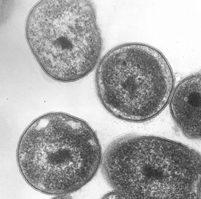

Life in the Air
On Earth, life has managed to find a foothold in a range of seemingly inhospitable environments.
Often the most extreme of environments are solely the domain of microbes; from the hot, high-pressure environments of deep sea vents,
to the insides of nuclear reactors, but not always. There are also ice worms that spend their lives in glacial ice, so adapted to the
cold that they would melt in your hand if picked up and the famous tardigrades (or water bears), micro-animals that can survive freezing,
boiling and even exposure to space.
There is still one environment on Earth that was, until recently, thought of as just a conduit, a medium
through which various forms of life travel, but do not live: the atmosphere. Clouds in particular could represent perfect habitats for
some forms of microbial life. These contain water and a range of nutrients including organic acids, nitrogen and sulphur. Add to this the
fact that a variety of common microorganisms have been found in clouds, and clouds begin to
seem a little like floating freshwater lake habitats. However, they are not quite as hospitable as they seem.

Clouds would definitely fall into the category of an extreme environment for life. While there is liquid water,
it is supercooled (below freezing point), cloud environments are often acidic and any organisms there would be subjected to high doses of
DNA-damaging UV radiation. Yet these conditions are not beyond the known tolerances of extremophiles; the generic name for microbes adapted
to extreme environments. Work is currently taking place to find out whether certain organisms, collected from samples of rainwater and
hailstones, can fully complete a lifecycle within a cloud, without any need to go back down to Earth.
One candidate cloud-dwelling organism is methanotropic bacteria; bacteria that metabolise using methane. These
enter the atmosphere via updrafts that remove them from topsoils. In a study carried out at Aarhus University, Denmark, methanotropic bacteria
collected from the air and from rainwater were placed under cloud-like conditions in the lab. These bacteria remained metabolically active
and continued to metabolise methane in these artificial cloud conditions. This suggests that these organisms could be metabolically active
within the atmosphere.
If Earth’s atmosphere is indeed a habitat in its own right, this presents an interesting question for the the habitability of other planets.
Could planets with inhospitable surfaces have habitable atmospheres? Could microbial life delay its extinction at the end of a habitable
planet’s lifetime, when the planet's brightening host star makes surface conditions too hot and dry for life (a scenario that has, perhaps
controversially, been suggested for any life on a young planet Venus). Opening up this last unexplored habitat on Earth could in turn open
up more potentially habitable space in the universe, making the habitability of atmospheres very astrobiologically interesting.
Further reading:
Viable methanotrophic bacteria enriched from air and rain can oxidize methane at cloud-like conditions
Biodiversity and biogeography of the atmosphere
Microbes in the Upper Atmosphere and Unique Opportunities for Astrobiology Research